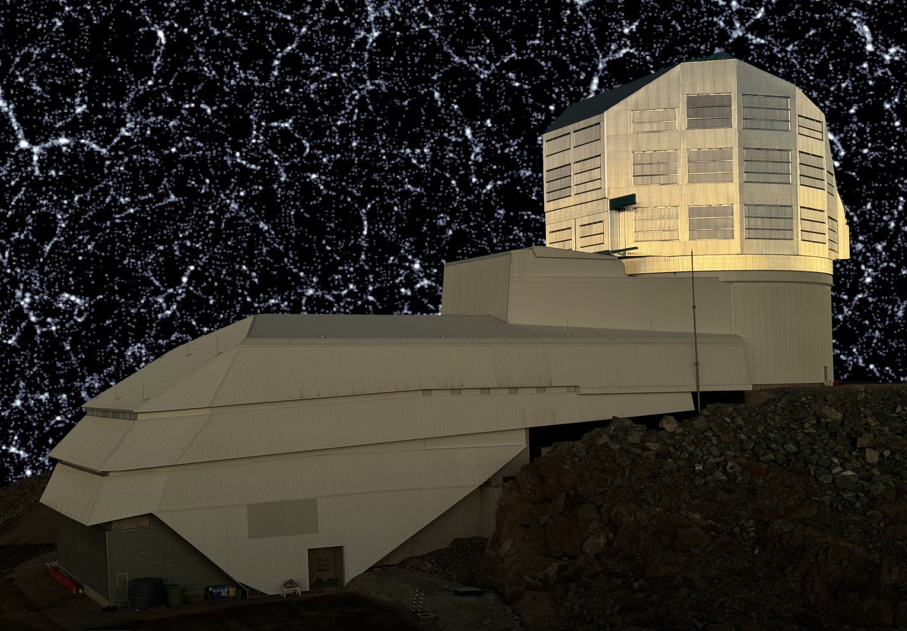

01 / In development
Dark matter simulations
This section is reserved for simulations, methods and results on dark matter. New examples and visualisations can be added here.
Research
A home for current work, publication highlights and evolving research directions.
This section is reserved for simulations, methods and results on dark matter. New examples and visualisations can be added here.

Space for galaxy clustering, marked statistics and tests of gravity with large-scale structure surveys.

Space for lensing observables, higher-order statistics and survey-based cosmological inference.

This section will explore the combination of galaxies from LSST simulations with gravitational-wave sources from LVK O5 simulations, connecting large-scale structure and standard-siren observations.

This section is under construction and will collect survey forecasts, observables and cosmological inference work.
Selected work
Selected examples of work on weak lensing, higher-order statistics and tests of gravity.
Elsewhere
Rubin Observatory LSST Dark Energy Science Collaboration ↗Kavli IPMU Center for Data-Driven Discovery ↗GitHub ↗GitLab ↗